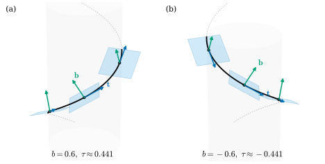
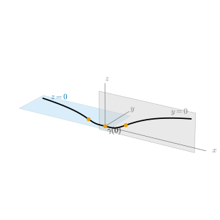

5.2 Torsion
Goals
- binormal vector \(\mathbf{b} = \mathbf{t} \times \mathbf{n}\)과 Frenet frame을 정의하고, \((\mathbf{t}, \mathbf{n}, \mathbf{b})\)가 positively oriented orthonormal basis임을 보일 수 있다.
- \(\mathbf{b}' = -\tau\mathbf{n}\)으로 torsion을 정의하고, do Carmo의 규약과 부호가 반대임을 설명할 수 있다.
- unit-speed curve의 공식 \(\tau = \inner{\gamma' \times \gamma''}{\gamma'''}/\kappa^2\)을 유도하고, helix의 torsion \(b/(a^2 + b^2)\)을 계산할 수 있다.
- \(\kappa \gt 0\)인 곡선이 plane curve일 필요충분조건이 \(\tau \equiv 0\)임을 증명하고, \(\kappa \gt 0\) 가정이 왜 필요한지 예로 보일 수 있다.
Prerequisites
- Definition 5.1.1 (curvature), Definition 5.1.8 (principal normal vector), Definition 5.1.9 (osculating plane), Example 5.1.7 (curvature of the helix)
- cross product(Definition 1.6.15), cross product의 성질(Theorem 1.6.16), positively oriented orthonormal basis의 cross product(Proposition 1.6.17), cross product의 곱의 미분법(Section 1.6 끝)
- 방향(Definition 1.6.11), determinant의 성질(Theorem 1.6.8), orthonormal basis에서의 전개(Proposition 1.5.9)
- 모든 계의 도함수가 \(0\)인 smooth function(Example 2.2.20)
Motivation
Example 5.1.7에서 반지름 \(2\)인 원과 \(a = b = 1\)인 helix의 curvature가 모두 \(1/2\)임을 보았다. 두 곡선은 같은 빠르기로 휘지만 모양이 다르다. 원은 한 평면 안에 머물고, helix는 평면을 벗어나 위로 올라간다. 무엇이 다른지는 osculating plane을 보면 드러난다. 원의 osculating plane은 모든 점에서 같은 평면이지만(Example 5.1.10), helix의 osculating plane은 곡선을 따라 가면서 기울기를 바꾼다.
평면이 어떻게 돌아가는지는 그 평면의 normal vector를 보면 알 수 있다. osculating plane의 unit normal vector는 \(\mathbf{t}\)와 \(\mathbf{n}\)에 모두 수직인 단위벡터, 곧 \(\pm\mathbf{t} \times \mathbf{n}\)이다 (Theorem 5.1.14 뒤의 설명). curvature가 \(\mathbf{t}\)가 도는 빠르기였듯이, 이 normal vector가 도는 빠르기가 곡선이 평면을 벗어나는 정도를 잴 것이다.

The Binormal Vector and the Frenet Frame
이 절에서 곡선은 arc length로 parametrization되어 있고 \(\kappa \gt 0\)이라 한다. 그러면 \(\mathbf{n}\)이 정의되고(Definition 5.1.8), \(\kappa\)와 \(\mathbf{n} = \gamma''/\kappa\)는 매끄럽다 (\(\gamma'' \neq 0\)이면 \(\kappa = \sqrt{\inner{\gamma''}{\gamma''}}\)이 매끄럽다).
Definition 5.2.1 (binormal vector). \(\gamma\colon I \to \R^3\)이 arc length로 parametrization되어 있고 \(\kappa(s) \gt 0\)일 때
를 \(s\)에서 \(\gamma\)의 binormal vector(종법선벡터)라 한다. 일반 매개변수의 regular curve에서는 orientation-preserving arc length parametrization \(\beta\)로 \(\mathbf{b}(t) = \mathbf{b}^\beta(s(t))\)라 정한다.
세 벡터의 순서쌍 \((\mathbf{t}(s), \mathbf{n}(s), \mathbf{b}(s))\)를 \(s\)에서 \(\gamma\)의 Frenet frame(Frenet 틀)이라 한다. 다음 명제가 이 이름의 근거다. 여기서 frame은 순서가 정해진 basis를 뜻한다.
Proposition 5.2.2 (the Frenet frame is a positively oriented orthonormal basis). \(\kappa(s) \gt 0\)이면 \((\mathbf{t}(s), \mathbf{n}(s), \mathbf{b}(s))\)는 \(\R^3\)의 positively oriented orthonormal basis이고
\[ \mathbf{t} \times \mathbf{n} = \mathbf{b}, \qquad \mathbf{n} \times \mathbf{b} = \mathbf{t}, \qquad \mathbf{b} \times \mathbf{t} = \mathbf{n} \]이다. 또 \(\mathbf{b}(s)\)는 \(s\)에서의 osculating plane의 unit normal vector다.
Proof. \(\mathbf{t}\)와 \(\mathbf{n}\)은 서로 orthogonal한 단위벡터다((5.1.4)). Theorem 1.6.16(b)에서 \(\mathbf{b}\)는 \(\mathbf{t}\)와 \(\mathbf{n}\)에 수직이고, (d)에서 \(\abs{\mathbf{b}}^2 = \abs{\mathbf{t}}^2\abs{\mathbf{n}}^2 - \inner{\mathbf{t}}{\mathbf{n}}^2 = 1\)이다. 따라서 세 벡터는 orthonormal이고, 서로 orthogonal한 영이 아닌 벡터들은 linearly independent이므로 basis다. (e)에 의해 \((\mathbf{t}, \mathbf{n}, \mathbf{t} \times \mathbf{n})\)은 positively oriented이다. cross product의 세 등식은 Proposition 1.6.17이다. 마지막으로 osculating plane은 \(\gamma(s)\)를 지나고 \(\mathbf{t}, \mathbf{n}\)의 span을 방향으로 하는 평면이므로, 두 벡터에 수직인 단위벡터 \(\mathbf{b}\)가 그 normal vector다.
Example 5.2.3 (binormal of the circle and the helix, running example). (a) 반지름 \(r\)인 원 \(\gamma(s) = (r\cos(s/r), r\sin(s/r), 0)\)은 \(\mathbf{t} = (-\sin(s/r), \cos(s/r), 0)\), \(\mathbf{n} = -(\cos(s/r), \sin(s/r), 0)\)이므로(Example 5.1.10) cross product의 성분 공식 (1.6.9)에서
\[ \begin{aligned} \mathbf{b} &= \big(\cos\cdot 0 - 0 \cdot (-\sin),\ \ 0 \cdot (-\cos) - (-\sin) \cdot 0,\\ &\qquad (-\sin)(-\sin) - \cos\cdot(-\cos)\big) = (0, 0, 1) \end{aligned} \]이다(인자 \(s/r\)는 생략했다). binormal은 상수 \(e_3\)이고, osculating plane은 늘 \(xy\)평면이다.
(b) helix의 arc length parametrization (4.3.2)에서 \(\mathbf{t} = \big(-\tfrac ac\sin\tfrac sc,\ \tfrac ac\cos\tfrac sc,\ \tfrac bc\big)\), \(\mathbf{n} = -\big(\cos\tfrac sc,\ \sin\tfrac sc,\ 0\big)\)이다. (1.6.9)로 성분을 하나씩 계산하면(인자 \(s/c\) 생략)
\[ \begin{aligned} b^1 &= \tfrac ac\cos \cdot 0 - \tfrac bc\cdot(-\sin) = \tfrac bc\sin,\\ b^2 &= \tfrac bc\cdot(-\cos) - \big(-\tfrac ac\sin\big)\cdot 0 = -\tfrac bc\cos,\\ b^3 &= \big(-\tfrac ac\sin\big)(-\sin) - \tfrac ac\cos\cdot(-\cos) = \tfrac ac \end{aligned} \]이다. 곧
이다. \(\mathbf{b}\)의 \(z\)성분은 상수 \(a/c\)이다. 곧 \(\mathbf{b}\)는 \(z\)축과 일정한 각을 이루며 축 둘레를 돈다(Figure 5.2.1). 여기서 이탤릭 \(b\)는 helix의 매개변수(running example의 기호)이고 굵은 \(\mathbf{b}\)는 binormal vector다. 두 기호는 글자 모양으로 구별한다.
Verification: verify/v-5-2-torsion.py (dgsym.frenet_frame과도 비교한다)
Torsion
curvature는 \(\mathbf{t}'\)의 크기였다. 이제 \(\mathbf{b}'\)을 보자. 먼저 \(\mathbf{b}'\)이 가리킬 수 있는 방향이 하나뿐임을 보인다.
Proposition 5.2.4 (\(\mathbf{b}'\) is parallel to \(\mathbf{n}\)). \(\gamma\)가 arc length로 parametrization되어 있고 \(I\)에서 \(\kappa \gt 0\)이면, 모든 \(s\)에서 \(\mathbf{b}'(s) = \inner{\mathbf{b}'(s)}{\mathbf{n}(s)}\,\mathbf{n}(s)\)이다.
Proof idea: \(\mathbf{b}'\)이 \(\mathbf{b}\)와 \(\mathbf{t}\)에 모두 수직임을 보이면, orthonormal basis \((\mathbf{t}, \mathbf{n}, \mathbf{b})\)에서 남는 성분은 \(\mathbf{n}\) 성분뿐이다.
Proof. \(\abs{\mathbf{b}} = 1\)이므로 Corollary 4.1.12에서 \(\inner{\mathbf{b}'}{\mathbf{b}} = 0\)이다. cross product의 곱의 미분법(Section 1.6)과 \(\mathbf{t}' = \kappa\mathbf{n}\)에서
\[ \mathbf{b}' = \mathbf{t}' \times \mathbf{n} + \mathbf{t} \times \mathbf{n}' = \kappa\,\mathbf{n} \times \mathbf{n} + \mathbf{t} \times \mathbf{n}' = \mathbf{t} \times \mathbf{n}' \]이다(\(\mathbf{n} \times \mathbf{n} = 0\), Theorem 1.6.16(a)). 같은 정리의 (b)에서 \(\mathbf{t} \times \mathbf{n}'\)은 \(\mathbf{t}\)에 수직이므로 \(\inner{\mathbf{b}'}{\mathbf{t}} = 0\)이다. Proposition 1.5.9로 orthonormal basis \((\mathbf{t}, \mathbf{n}, \mathbf{b})\)에 대해 전개하면 \(\mathbf{b}' = \inner{\mathbf{b}'}{\mathbf{t}}\mathbf{t} + \inner{\mathbf{b}'}{\mathbf{n}}\mathbf{n} + \inner{\mathbf{b}'}{\mathbf{b}}\mathbf{b} = \inner{\mathbf{b}'}{\mathbf{n}}\mathbf{n}\)이다.
따라서 \(\mathbf{b}'\)은 한 실수로 완전히 기록된다. 그 수에 부호를 하나 붙여 torsion이라 부른다. 부호를 어떻게 붙일지는 규약이고, 이 study set은 오른손 helix가 양의 torsion을 갖도록 정한다.
Definition 5.2.5 (torsion). \(\gamma\colon I \to \R^3\)이 arc length로 parametrization되어 있고 \(I\)에서 \(\kappa \gt 0\)이라 하자.
로 정한 함수 \(\tau\colon I \to \R\)를 \(\gamma\)의 torsion(비틀림률)이라 한다. 일반 매개변수의 regular curve(\(\kappa \gt 0\))에서는 orientation-preserving arc length parametrization \(\beta\)로 \(\tau(t) = \tau^\beta(s(t))\)라 정한다.
\(\tau\)는 smooth function들의 inner product이므로 매끄럽다. curvature와 달리 \(\tau\)는 음수일 수 있다. \(\kappa = 0\)인 점에서는 \(\mathbf{n}\)이 없으므로 torsion도 정의하지 않는다. 한국어로는 “비틀림률” 또는 “열률”이라 한다. Chapter 22에서 connection의 torsion은 “비틀림”이라 부른다. 둘은 다른 개념이다.
Example 5.2.6 (torsion of the circle and the helix, running example). (a) 원은 \(\mathbf{b} \equiv e_3\)이므로(Example 5.2.3(a)) \(\mathbf{b}' = 0\)이고 \(\tau \equiv 0\)이다. running example의 원의 \(\tau = 0\)이다.
(b) helix의 (5.2.2)를 미분하면
\[ \mathbf{b}'(s) = \Big(\frac{b}{c^2}\cos\frac sc,\ \frac{b}{c^2}\sin\frac sc,\ 0\Big) = -\frac{b}{c^2}\,\mathbf{n}(s) \]이므로 정의 (5.2.3)에서
\[ \tau = \frac{b}{c^2} = \frac{b}{a^2 + b^2} \]이다. 이것이 running example의 helix의 torsion이다. \(b \gt 0\)(오른손 helix)이면 \(\tau \gt 0\), \(b \lt 0\)(왼손 helix)이면 \(\tau \lt 0\)이다. curvature \(a/(a^2 + b^2)\)과 합치면 \(\kappa\)와 \(\tau\)는 모두 상수이고 \(\tau/\kappa = b/a\)이다. 같은 curvature \(1/2\)을 갖는 반지름 \(2\)인 원과 \(a = b = 1\)인 helix는 이제 \(\tau = 0\)과 \(\tau = 1/2\)로 구별된다.
Verification: verify/v-5-2-torsion.py (정의, Proposition 5.2.7의 공식, dgsym.curvature_torsion의 세 가지 방법으로 비교한다)
\(\mathbf{b}\)를 매번 cross product로 구하고 미분하는 것은 번거롭다. 곡선의 도함수만으로 torsion을 계산하는 공식을 만들자.
Proposition 5.2.7 (torsion formula for a unit-speed curve). \(\gamma\)가 arc length로 parametrization되어 있고 \(\kappa \gt 0\)이면
이다.
Proof idea: \(\mathbf{b} = \gamma' \times \gamma''/\kappa\)를 미분하면 \(\mathbf{b}\) 방향 항과 \(\gamma' \times \gamma'''/\kappa\) 항이 생긴다. \(\mathbf{n}\)과의 inner product를 취하면 앞의 항은 사라지고, 뒤의 항은 determinant가 된다.
Proof. \(\mathbf{t} = \gamma'\), \(\mathbf{n} = \gamma''/\kappa\)이므로 cross product의 bilinearity에서 \(\mathbf{b} = \gamma' \times \gamma''/\kappa\)이다. 곱의 미분법으로
\[ \begin{aligned} \mathbf{b}' &= \Big(\frac1\kappa\Big)'\gamma' \times \gamma'' + \frac1\kappa\big(\gamma'' \times \gamma'' + \gamma' \times \gamma'''\big)\\ &= \Big(\frac1\kappa\Big)'\kappa\,\mathbf{b} + \frac1\kappa\,\gamma' \times \gamma''' \end{aligned} \]이다(\(\gamma'' \times \gamma'' = 0\)). \(\inner{\mathbf{b}}{\mathbf{n}} = 0\)이므로
\[ \begin{aligned} \inner{\mathbf{b}'}{\mathbf{n}} &= \frac{1}{\kappa}\inner{\gamma' \times \gamma'''}{\frac{\gamma''}{\kappa}}\\ &= \frac{1}{\kappa^2}\det(\gamma', \gamma''', \gamma'') = -\frac{1}{\kappa^2}\det(\gamma', \gamma'', \gamma''') \end{aligned} \]이다. 둘째 등호는 cross product의 정의 (1.6.7)이고, 셋째 등호는 determinant가 alternating이라서(Definition 1.6.6, Definition 1.6.1) 두 열을 바꾸면 부호가 바뀐다는 것이다. \(\tau = -\inner{\mathbf{b}'}{\mathbf{n}}\)이고 다시 (1.6.7)에서 \(\det(\gamma', \gamma'', \gamma''') = \inner{\gamma' \times \gamma''}{\gamma'''}\)이다.
공식 (5.2.4)의 분자는 \(\gamma', \gamma'', \gamma'''\)이 만드는 parallelepiped의 부호 있는 부피(signed volume)다. \(\gamma'''\)이 osculating plane(방향이 \(\gamma'\)과 \(\gamma''\)의 span) 밖으로 얼마나 나가는지를 재는 셈이다. helix에서 확인하면 \(\beta' \times \beta'' = \kappa\,\mathbf{b} = (a/c^2)\mathbf{b}\), \(\beta''' = (a/c^3)(\sin\tfrac sc, -\cos\tfrac sc, 0)\)이므로 분자는 \((a/c^2)(a/c^3)(b/c)(\sin^2 + \cos^2) = a^2b/c^6\)이고, \(\kappa^2 = a^2/c^4\)으로 나누면 \(b/c^2\)이다. 일반 매개변수의 공식은 Section 5.3에서 얻는다.
Proposition 5.2.8 (torsion is independent of orientation and changes sign under reflection). \(\gamma\)가 \(\kappa \gt 0\)인 regular curve라 하자.
- (a) \(\beta = \gamma \circ h\)가 reparametrization이면, \(h\)가 orientation-preserving이든 orientation-reversing이든 \(\tau^\beta(u) = \tau(h(u))\)이다. binormal vector는 \(h\)가 orientation-preserving이면 같고, orientation-reversing이면 부호가 바뀐다.
- (b) \(\rho(x, y, z) = (x, y, -z)\)(\(xy\)평면에 대한 반사)이면 \(\rho \circ \gamma\)의 curvature는 \(\gamma\)의 curvature와 같고, torsion은 \(-\tau\)이다.
Proof. 두 주장 모두 unit-speed curve에서 보이면 충분하다. orientation-preserving reparametrization은 정의 자체가 arc length parametrization을 쓰고, 두 단위속력 reparametrization은 매개변수의 translation이나 \(u \mapsto -u + c\)만큼만 다르기 때문이다 (Theorem 4.3.9(c)).
(a) \(\bar\gamma(s) = \gamma(-s + c)\)이면 \(\bar\gamma' = -\gamma'\), \(\bar\gamma'' = \gamma''\), \(\bar\gamma''' = -\gamma'''\)이다(각 인자는 \(-s + c\)). 따라서 curvature는 같고, determinant의 multilinearity에서 \(\det(-\gamma', \gamma'', -\gamma''') = \det(\gamma', \gamma'', \gamma''')\)이므로 (5.2.4)에서 \(\bar\tau(s) = \tau(-s + c)\)이다. binormal은 \(\bar{\mathbf{b}} = \bar{\mathbf{t}} \times \bar{\mathbf{n}} = (-\mathbf{t}) \times \mathbf{n} = -\mathbf{b}\)이다.
(b) \(\rho\)는 linear이고 \(\inner{\rho v}{\rho w} = v^1w^1 + v^2w^2 + (-v^3)(-w^3) = \inner{v}{w}\)이다. \((\rho \circ \gamma)^{(k)} = \rho\,\gamma^{(k)}\)이므로 \(\rho \circ \gamma\)는 단위속력이고 curvature는 \(\abs{\rho\gamma''} = \abs{\gamma''}\)이다. 열이 \(\rho\gamma', \rho\gamma'', \rho\gamma'''\)인 행렬은 \(\rho\)의 행렬 \(\diag(1, 1, -1)\)에 열이 \(\gamma', \gamma'', \gamma'''\)인 행렬을 곱한 것이므로 Theorem 1.6.8(a)에서 그 determinant는 \((-1)\det(\gamma', \gamma'', \gamma''')\)이다. (5.2.4)에서 torsion의 부호가 바뀐다.
(a)는 torsion이 trace에만 달린 기하적인 양이라는 것을 말한다. 방향을 뒤집으면 \(\mathbf{t}\)와 \(\mathbf{b}\)가 함께 뒤집히고, \(\mathbf{b}' = -\tau\mathbf{n}\)의 양변에서 부호가 상쇄된다. (b)는 torsion이 공간의 방향(오른손과 왼손)에 달려 있음을 말한다. 오른손 helix \((a\cos t, a\sin t, bt)\)를 \(\rho\)로 반사하면 \((a\cos t, a\sin t, -bt)\), 곧 \(b\)를 \(-b\)로 바꾼 왼손 helix가 되고 torsion이 \(-b/(a^2 + b^2)\)이 된다(Figure 5.2.1). signed curvature가 평면의 orientation에 달려 있던 것(Proposition 4.4.7(c))과 같은 현상이다. 일반적인 rigid motion과 반사는 Section 5.4에서 다룬다.
Curves with Torsion \(0\)
원의 torsion은 \(0\)이었다. 그 이유는 원이 한 평면에 있기 때문이다. 이것이 일반적인 사실이다.
Proposition 5.2.9 (\(\tau \equiv 0\) implies a plane curve). \(\gamma\colon I \to \R^3\)이 regular curve이고 \(I\)의 모든 점에서 \(\kappa \gt 0\)이라 하자. 모든 점에서 \(\tau = 0\)일 필요충분조건은 \(\gamma\)의 trace가 한 평면에 들어 있는 것이다. 이때 그 평면은 모든 점에서의 osculating plane이다.
Proof idea: \(\tau \equiv 0\)이면 \(\mathbf{b}\)가 상수이고, \(\inner{\gamma}{\mathbf{b}}\)의 도함수가 \(\inner{\mathbf{t}}{\mathbf{b}} = 0\)이므로 \(\gamma\)는 \(\mathbf{b}\)에 수직인 평면에 머문다. 거꾸로 평면에 있으면 \(\mathbf{b}\)가 그 평면의 normal vector가 되어 상수다.
Proof. Proposition 5.2.8(a)와 reparametrization이 trace를 바꾸지 않는다는 것에서 \(\gamma\)가 단위속력이라 해도 된다. \(s_0 \in I\)을 하나 고정한다.
(\(\Rightarrow\)) \(\tau \equiv 0\)이면 \(\mathbf{b}' = 0\)이므로 \(\mathbf{b}\)의 각 성분은 상수이고(mean value theorem), \(\mathbf{b} \equiv \mathbf{b}_0\)이다. \(g(s) = \inner{\gamma(s) - \gamma(s_0)}{\mathbf{b}_0}\)로 두면 \(g' = \inner{\mathbf{t}}{\mathbf{b}_0} = \inner{\mathbf{t}}{\mathbf{b}} = 0\)이고 \(g(s_0) = 0\)이므로 \(g \equiv 0\)이다. 따라서 trace는 \(\gamma(s_0)\)를 지나고 \(\mathbf{b}_0\)에 수직인 평면 \(\Pi\)에 들어 있다. 모든 점에서 osculating plane의 normal vector가 \(\mathbf{b}_0\)이고(Proposition 5.2.2) osculating plane이 \(\Pi\)의 점 \(\gamma(s)\)를 지나므로, osculating plane은 \(\Pi\)이다.
(\(\Leftarrow\)) trace가 unit normal vector \(\nu\)를 갖는 평면 \(\{p : \inner{p - p_0}{\nu} = 0\}\)에 들어 있다고 하자. \(\inner{\gamma(s) - p_0}{\nu} = 0\)을 두 번 미분하면 \(\inner{\mathbf{t}}{\nu} = 0\), \(\inner{\gamma''}{\nu} = 0\)이고, \(\kappa \gt 0\)이므로 \(\inner{\mathbf{n}}{\nu} = 0\)이다. orthonormal basis로 전개하면 \(\nu = \inner{\nu}{\mathbf{b}}\mathbf{b}\)이고, \(\abs{\nu} = 1\)에서 \(\inner{\nu}{\mathbf{b}(s)} \in \{1, -1\}\)이다. 이 함수는 연속이므로 intermediate value theorem(Corollary 3.7.6)에 의해 상수이고, 따라서 \(\mathbf{b} = \pm\nu\)는 상수다. 그러면 \(\mathbf{b}' = 0\)이고 \(\tau = -\inner{\mathbf{b}'}{\mathbf{n}} = 0\)이다.
sphere 위의 circle of latitude와 great circle은 평면에 놓인 원이므로 모두 \(\tau = 0\)이다(Example 4.5.11, Example 4.5.12). 그 Frenet frame은 Section 5.3에서 sphere의 normal vector와 함께 계산한다. 명제의 가정 “모든 점에서 \(\kappa \gt 0\)”은 빼면 안 된다.
Non-example 5.2.10 (when \(\kappa\) becomes \(0\) at some point). \(f\)를 Example 2.2.20의 함수(\(t \gt 0\)이면 \(e^{-1/t}\), \(t \le 0\)이면 \(0\))라 하고
\[ \gamma(t) = \big(t,\ f(-t),\ f(t)\big), \qquad t \in \R \]로 두자. \(f\)가 매끄러우므로 \(\gamma\)는 매끄럽고, \(\gamma'(t) = (1, -f'(-t), f'(t)) \neq 0\)이므로 regular이다. \(t \le 0\)이면 \(\gamma(t) = (t, f(-t), 0)\)은 \(xy\)평면에, \(t \ge 0\)이면 \(\gamma(t) = (t, 0, f(t))\)는 \(xz\)평면에 있다(Figure 5.2.2).
- \(t \gt 0\)에서 \(f''(t) = e^{-1/t}(1 - 2t)/t^4\)이므로 curvature \(\abs{f''}/(1 + f'^2)^{3/2}\)(Proposition 5.1.5, (4.4.5))은 \(t = 1/2\)에서만 \(0\)이다. \(t \lt 0\)도 같아서 \(t = -1/2\)에서만 \(0\)이고, \(t = 0\)에서는 \(\gamma''(0) = 0\)이므로 \(\kappa = 0\)이다.
- \(\kappa \gt 0\)인 각 구간 \((-\infty, -\tfrac12)\), \((-\tfrac12, 0)\), \((0, \tfrac12)\), \((\tfrac12, \infty)\)에서 곡선은 평면에 있으므로 Proposition 5.2.9에 의해 \(\tau = 0\)이다.
- 그러나 trace는 한 평면에 들어 있지 않다. 그런 평면이 있다면 한 직선 위에 있지 않은 세 점 \(\gamma(0) = (0, 0, 0)\), \(\gamma(-1) = (-1, e^{-1}, 0)\), \(\gamma(-2) = (-2, e^{-1/2}, 0)\)을 포함하므로 \(xy\)평면이어야 하는데, \(\gamma(1) = (1, 0, e^{-1})\)은 \(xy\)평면 밖에 있다.
\(t \lt 0\) 쪽의 osculating plane은 \(xy\)평면, \(t \gt 0\) 쪽의 osculating plane은 \(xz\)평면이다. curvature가 \(0\)이 되는 점 \(t = 0\)에서 곡선이 평면을 “갈아탈” 수 있는 것이다. Non-example 5.1.11에서 예고한 현상이 이것이다. [dC §1-5 Exercise 10과 같은 생각의 변형]
Verification: verify/v-5-2-torsion.py

Remark 5.2.11 (torsion is the rate of turning of the osculating plane). curvature가 “단위 길이당 접선이 도는 각”이었듯이(Theorem 4.4.9, Exercise 5.1.6), \(\abs{\tau}\)는 “단위 길이당 osculating plane이 도는 각”이다. 두 평면 사이의 각은 normal vector 사이의 각이다. \(\vartheta(s) \in [0, \pi]\)를 \(\mathbf{b}(s_0)\)와 \(\mathbf{b}(s)\) 사이의 각이라 하면 \(\abs{\mathbf{b}(s) - \mathbf{b}(s_0)}^2 = 2 - 2\cos\vartheta = 4\sin^2(\vartheta/2)\)이다. \(\mathbf{b}\)가 연속이므로 \(s \to s_0\)이면 \(\vartheta \to 0\)이고, \(\sin x/x \to 1\)이므로
\[ \lim_{s \to s_0}\frac{\vartheta(s)}{\abs{s - s_0}} = \lim_{s \to s_0}\frac{\abs{\mathbf{b}(s) - \mathbf{b}(s_0)}}{\abs{s - s_0}} = \abs{\mathbf{b}'(s_0)} = \abs{\tau(s_0)} \]이다. \(\tau\)의 부호는 도는 방향을 말한다. \(\mathbf{b}' = -\tau\mathbf{n}\)이므로 \(\tau \gt 0\)이면 \(\mathbf{b}\)는 \(-\mathbf{n}\) 쪽으로 기운다. 이것을 곡선의 모양으로 옮기면 “\(\tau \gt 0\)이면 곡선은 \(s\)가 늘어날 때 osculating plane을 \(-\mathbf{b}\) 쪽에서 \(+\mathbf{b}\) 쪽으로 뚫고 지나간다”가 된다. 그 증명은 Section 5.5의 local canonical form에서 한다.
Summary
- \(\kappa \gt 0\)이면 binormal vector \(\mathbf{b} = \mathbf{t} \times \mathbf{n}\)이 정의되고, Frenet frame \((\mathbf{t}, \mathbf{n}, \mathbf{b})\)는 positively oriented orthonormal basis다. \(\mathbf{b}\)는 osculating plane의 unit normal vector다(Proposition 5.2.2).
- \(\mathbf{b}'\)은 \(\mathbf{n}\)에 평행하고, \(\mathbf{b}' = -\tau\mathbf{n}\)으로 torsion을 정한다. do Carmo의 \(\tau\)와 부호가 반대다(Conventions 상자).
- unit-speed curve에서 \(\tau = \inner{\gamma' \times \gamma''}{\gamma'''}/\kappa^2\)이다(Proposition 5.2.7). 원은 \(\tau = 0\), helix는 \(\tau = b/(a^2 + b^2)\)이고 오른손 helix에서 양수다.
- torsion은 곡선의 orientation에 무관하지만 반사에서 부호가 바뀐다(Proposition 5.2.8). \(\abs{\tau}\)는 osculating plane이 도는 빠르기다(Remark 5.2.11).
- 모든 점에서 \(\kappa \gt 0\)이면 \(\tau \equiv 0\)과 plane curve는 같다(Proposition 5.2.9). \(\kappa\)가 \(0\)이 되는 점이 있으면 성립하지 않는다(Non-example 5.2.10).
다음 절에서는 남은 도함수 \(\mathbf{n}'\)을 계산해 \(\mathbf{t}', \mathbf{n}', \mathbf{b}'\)을 모두 Frenet frame으로 나타내는 Frenet–Serret formulas를 얻는다. 또 일반 매개변수에서 \(\kappa\)와 \(\tau\)를 구하는 공식을 유도하고, sphere 위 원들의 Frenet frame을 sphere의 normal vector와 비교한다.
Exercises
Exercise 5.2.1 ★ \(a \gt 0\)을 고정하고 \(b\)를 움직일 때 helix의 torsion \(\tau = b/(a^2 + b^2)\)이 가장 큰 \(b\)와 그 값을 구하여라. 그때의 curvature는 얼마인가?
Solution
\(d\tau/db = \big((a^2 + b^2) - 2b^2\big)/(a^2 + b^2)^2 = (a^2 - b^2)/(a^2 + b^2)^2\)은 \(\abs{b} \lt a\)에서 양수, \(\abs{b} \gt a\)에서 음수다. 따라서 \(\tau\)는 \(b = a\)에서 최댓값 \(a/(2a^2) = 1/(2a)\)을 가진다 (\(b = -a\)에서 최솟값 \(-1/(2a)\)). 그때 curvature도 \(a/(2a^2) = 1/(2a)\)이므로 \(\kappa = \tau\)이다. 너무 느슨하게(\(b\) 작게) 감아도, 너무 길게(\(b\) 크게) 늘여도 비틀림은 약해진다.
Verification: verify/v-5-2-torsion.py
Exercise 5.2.2 ★ helix의 \(\mathbf{t}\), \(\mathbf{n}\), \(\mathbf{b}\)가 각각 \(z\)축의 방향 \(e_3\)과 이루는 각이 일정함을 보이고 그 코사인을 구하여라. [dC §1-5 Exercise 1 변형]
Solution
Example 5.2.3(b)의 식에서 \(\inner{\mathbf{t}}{e_3} = b/c\), \(\inner{\mathbf{n}}{e_3} = 0\), \(\inner{\mathbf{b}}{e_3} = a/c\)(\(c = \sqrt{a^2 + b^2}\))로 모두 상수다. 단위벡터 사이의 각의 코사인은 inner product이므로 \(\mathbf{t}\)는 \(e_3\)과 \(\arccos(b/c)\), \(\mathbf{n}\)은 직각, \(\mathbf{b}\)는 \(\arccos(a/c)\)의 각을 이룬다. \(\mathbf{t}\)와 \(\mathbf{b}\)의 두 각은 합이 \(\pi/2\)이다 (\(b \gt 0\)일 때 \((b/c)^2 + (a/c)^2 = 1\)).
Verification: verify/v-5-2-torsion.py
Exercise 5.2.3 ★ \(\gamma(s) = \big(\tfrac35\sin s,\ \tfrac45\sin s,\ 2 + \cos s\big)\)가 단위속력임을 보이고 \(\kappa\), \(\tau\), \(\mathbf{b}\)를 구하여라. trace가 어떤 평면 안의 어떤 원인지 말하여라.
Solution
\(\gamma' = (\tfrac35\cos s, \tfrac45\cos s, -\sin s)\)이고 \(\abs{\gamma'}^2 = \tfrac{9 + 16}{25}\cos^2 s + \sin^2 s = 1\)이다. \(\gamma'' = (-\tfrac35\sin s, -\tfrac45\sin s, -\cos s)\)이므로 같은 계산으로 \(\kappa = 1\)이고 \(\mathbf{n} = \gamma''\)이다. \(\gamma''' = -\gamma'\)이므로 \(\det(\gamma', \gamma'', \gamma''') = 0\)(두 열이 비례)이고 (5.2.4)에서 \(\tau = 0\)이다. (1.6.9)로 계산하면
\[ \begin{aligned} \mathbf{b} = \mathbf{t} \times \mathbf{n} &= \Big(-\tfrac45(\cos^2 s + \sin^2 s),\ \ \tfrac35(\sin^2 s + \cos^2 s),\\ &\qquad -\tfrac{12}{25}\cos s\sin s + \tfrac{12}{25}\cos s\sin s\Big) = \Big(-\tfrac45,\ \tfrac35,\ 0\Big) \end{aligned} \]이다. center of curvature는 \(\gamma + \gamma''/\abs{\gamma''}^2 = \gamma + \gamma'' = (0, 0, 2)\)로 상수다. 따라서 trace는 \((0, 0, 2)\)를 지나고 \(\mathbf{b}\)에 수직인 평면 \(4x - 3y = 0\)(Proposition 5.2.9) 안에서 중심이 \((0, 0, 2)\)이고 반지름이 \(1\)인 원이다(실제로 \(\abs{\gamma - (0, 0, 2)}^2 = \sin^2 s + \cos^2 s = 1\)).
Verification: verify/v-5-2-torsion.py
Exercise 5.2.4 ★ \(\kappa \gt 0\)인 regular curve에 대한 다음 주장이 참인지 거짓인지 판별하고 이유를 대어라. (a) 곡선의 orientation을 뒤집으면 torsion의 부호가 바뀐다. (b) 곡선을 거울에 비추면(반사하면) torsion의 부호가 바뀐다. (c) torsion이 어디서나 \(0\)이면 곡선은 평면에 있다. (d) \(\kappa \ge 0\)과 같은 이유로 \(\tau \ge 0\)이다.
Solution
(a) 거짓. \(\mathbf{t}\)와 \(\mathbf{b}\)의 부호가 함께 바뀌어 \(\tau\)는 그대로다(Proposition 5.2.8(a)). (b) 참. Proposition 5.2.8(b). 오른손 helix의 거울상은 왼손 helix이다. (c) 참. 가정에서 \(\kappa \gt 0\)이 모든 점에서 성립하므로 Proposition 5.2.9이다. \(\kappa\)가 \(0\)이 되는 점을 허락하면 거짓이 될 수 있다(Non-example 5.2.10). (d) 거짓. \(\kappa\)는 크기로 정의했지만 \(\tau\)는 \(-\inner{\mathbf{b}'}{\mathbf{n}}\)이라는 성분이다. 왼손 helix는 \(\tau \lt 0\)이다(Example 5.2.6).
Exercise 5.2.5 ★★ \((x(u), y(u))\)가 arc length로 parametrization된 plane curve이고 signed curvature가 \(k(u)\)라 하자. \(0 \lt \alpha \lt \pi\)에 대해 \(\beta(s) = \big(x(s\sin\alpha),\ y(s\sin\alpha),\ s\cos\alpha\big)\)가 단위속력이고, \(k \neq 0\)인 곳에서 \(\kappa = \abs{k}\sin^2\alpha\), \(\tau = k\sin\alpha\cos\alpha\)임을 보여라. (이 곡선의 unit tangent vector는 \(e_3\)과 일정한 각 \(\alpha\)를 이룬다. 그래서 \(\tau/\kappa\)가 상수다.) [dC §1-5 Exercise 17 참고]
Hint
\(\hat{\mathbf{t}} = (x', y')\), \(J\hat{\mathbf{t}} = (-y', x')\)로 두면 \(\hat{\mathbf{t}}' = kJ\hat{\mathbf{t}}\), \((J\hat{\mathbf{t}})' = -k\hat{\mathbf{t}}\)이다. Proposition 5.2.7을 쓴다.
Solution
\(\sigma = \sin\alpha\), \(\mu = \cos\alpha\)로 쓰고 \(x, y\)와 그 도함수는 \(u = s\sigma\)에서 계산한다. chain rule에서 \(\beta' = (\sigma\hat{\mathbf{t}},\ \mu)\)(처음 두 성분을 \(\hat{\mathbf{t}}\)로 묶었다)이고 \(\abs{\beta'}^2 = \sigma^2 + \mu^2 = 1\)이다. 다시 미분하면 \(\beta'' = (\sigma^2 k J\hat{\mathbf{t}},\ 0)\), \(\beta''' = (\sigma^3(k'J\hat{\mathbf{t}} - k^2\hat{\mathbf{t}}),\ 0)\)이다. 따라서 \(\kappa = \abs{\beta''} = \sigma^2\abs{k}\)이다. (1.6.9)로 \(\beta' \times \beta''\)을 계산하면(\(\hat{\mathbf{t}} = (p, q)\), \(J\hat{\mathbf{t}} = (-q, p)\))
\[ \begin{aligned} (\sigma p, \sigma q, \mu) \times (-\sigma^2 kq, \sigma^2 kp, 0) &= \sigma^2 k\big(-\mu p,\ -\mu q,\ \sigma(p^2 + q^2)\big)\\ &= \sigma^2 k\,(-\mu\hat{\mathbf{t}},\ \sigma) \end{aligned} \]이다. 이것과 \(\beta'''\)의 inner product는 \(\sigma^2 k \cdot \sigma^3\inner{-\mu\hat{\mathbf{t}}}{k'J\hat{\mathbf{t}} - k^2\hat{\mathbf{t}}} = \sigma^5\mu k^3\)이다(\(\inner{\hat{\mathbf{t}}}{J\hat{\mathbf{t}}} = 0\), \(\abs{\hat{\mathbf{t}}} = 1\)). (5.2.4)에서 \(\tau = \sigma^5\mu k^3/(\sigma^4 k^2) = k\sigma\mu\)이다. \(\inner{\beta'}{e_3} = \mu = \cos\alpha\)가 상수이고, \(\tau/\kappa = \pm\cot\alpha\)이다. 예를 들어 \((x, y)\)가 반지름 \(r\)인 원이면 \(\beta\)는 helix이고, \(k = 1/r\)에서 Example 5.2.6과 같은 값을 준다(\(a = r\), \(b/a = \cot\alpha\)).
Verification: verify/v-5-2-torsion.py (일반적인 tangent angle 함수 \(\theta(u)\)로 기호 계산)
Exercise 5.2.6 ★★ \(\gamma\)가 arc length로 parametrization되어 있고 \(\kappa \gt 0\), \(\tau \neq 0\)이라 하자. binormal 함수 \(s \mapsto \mathbf{b}(s)\)만 알면 \(\abs{\tau}\)와 \(\kappa\)가 정해지지만 \(\tau\)의 부호는 정해지지 않음을 보여라. [dC §1-5 Exercise 15 변형]
Hint
부호에 대해서는 \(\tilde\gamma = -\gamma\)를 생각한다.
Solution
\(\abs{\tau} = \abs{\mathbf{b}'}\)이다(\(\mathbf{b}' = -\tau\mathbf{n}\), \(\abs{\mathbf{n}} = 1\)). \(\tau \neq 0\)이므로 \(\mathbf{n} = \varepsilon\,\mathbf{b}'/\abs{\mathbf{b}'}\)이고 \(\varepsilon = -\tau/\abs{\tau} = \pm 1\)은 연속이므로 상수다. 그러면 \(\mathbf{t} = \mathbf{n} \times \mathbf{b} = \varepsilon\,(\mathbf{b}'/\abs{\mathbf{b}'}) \times \mathbf{b}\)(Proposition 5.2.2)이고 \(\kappa = \abs{\mathbf{t}'} = \abs{\big((\mathbf{b}'/\abs{\mathbf{b}'}) \times \mathbf{b}\big)'}\)은 \(\varepsilon\)에 무관하게 \(\mathbf{b}\)만으로 정해진다.
부호: \(\tilde\gamma = -\gamma\)는 단위속력이고 \(\tilde{\mathbf{t}} = -\mathbf{t}\), \(\tilde\gamma'' = -\gamma''\)이므로 \(\tilde{\mathbf{n}} = -\mathbf{n}\), \(\tilde{\mathbf{b}} = (-\mathbf{t}) \times (-\mathbf{n}) = \mathbf{b}\)이다. 곧 두 곡선의 binormal 함수는 같다. 그런데 \(\tilde{\mathbf{b}}' = \mathbf{b}' = -\tau\mathbf{n} = \tau\tilde{\mathbf{n}}\)이므로 \(\tilde\tau = -\tau\)이다. 따라서 \(\mathbf{b}\)만으로는 \(\tau\)의 부호를 알 수 없다. (\(p \mapsto -p\)는 determinant가 \(-1\)인 linear map이므로 Proposition 5.2.8(b)와 같은 현상이다.)
Verification: verify/v-5-2-torsion.py (helix에서 \(-\gamma\)의 \(\mathbf{b}\)와 \(\tau\))
Exercise 5.2.7 ★★ \(A = \diag(-1, -1, 1)\)(\(z\)축 둘레의 \(\pi\) 회전)와 \(-I_3\)(원점에 대한 point reflection)에 대하여, unit-speed curve \(\gamma\)(\(\kappa \gt 0\))의 image \(A\gamma\)와 \(-\gamma\)의 torsion을 \(\tau\)로 나타내어라. 두 map의 차이는 무엇인가? helix에서 확인하여라.
Solution
두 map 모두 linear이고 inner product를 보존하므로(성분의 부호만 바꾼다) image는 단위속력이고 curvature가 같다. Proposition 5.2.8(b)의 증명과 같이 (5.2.4)의 determinant에는 map의 determinant가 곱해진다. \(\det A = 1\)이므로 \(A\gamma\)의 torsion은 \(\tau\)이고, \(\det(-I_3) = -1\)이므로 \(-\gamma\)의 torsion은 \(-\tau\)이다. 차이는 determinant의 부호, 곧 공간의 orientation을 보존하는가(회전)와 뒤집는가(point reflection)이다. helix에서 \(A\gamma(t) = (a\cos(t + \pi), a\sin(t + \pi), bt) = \gamma(t + \pi) - (0, 0, \pi b)\)는 같은 helix를 \(z\)축 방향으로 옮기고 매개변수도 옮긴 것이고(\(\tau = b/(a^2 + b^2)\)), \(-\gamma(t) = (a\cos(t + \pi), a\sin(t + \pi), -bt)\)는 \(b\)를 \(-b\)로 바꾼 helix이다(\(\tau = -b/(a^2 + b^2)\)).
Verification: verify/v-5-2-torsion.py